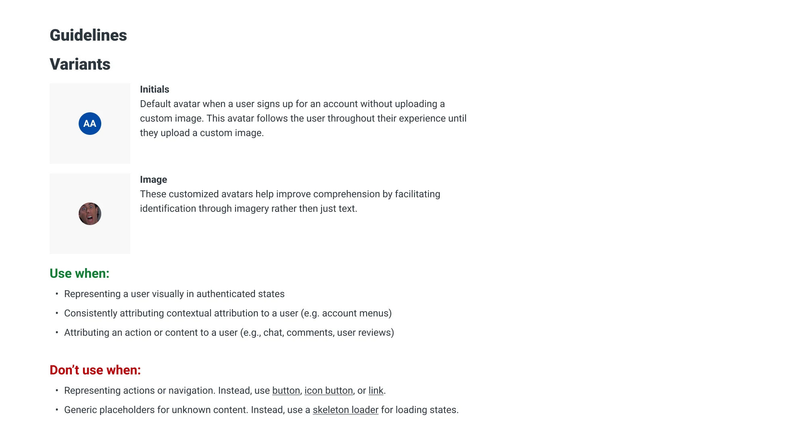
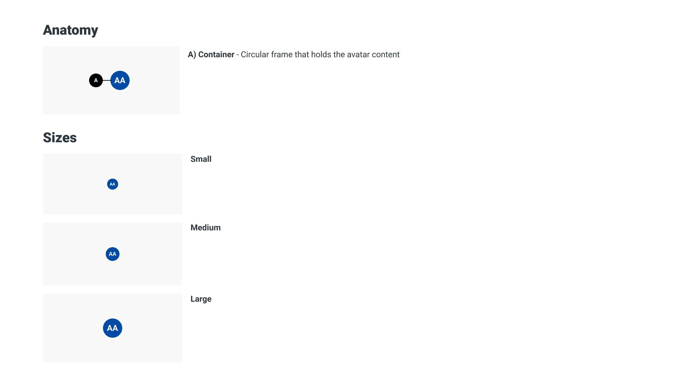
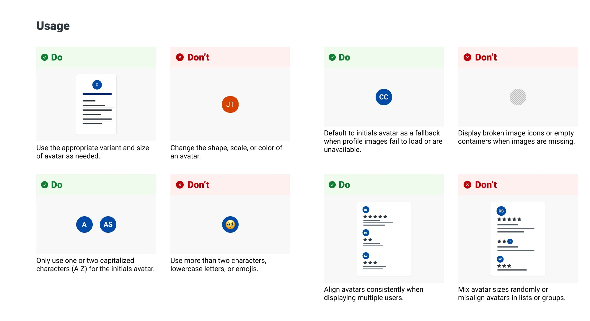
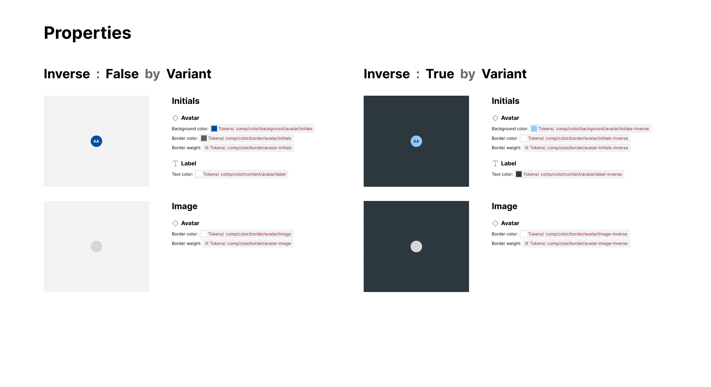
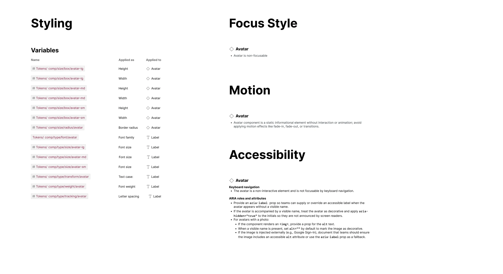
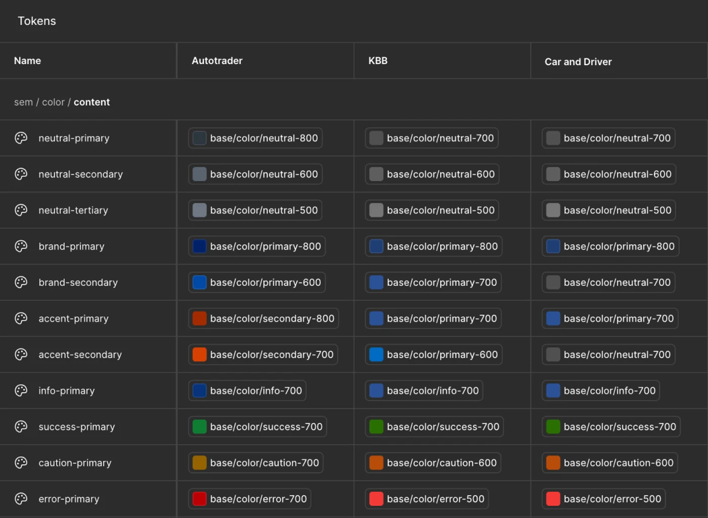

Iris Design System
Iris is Cox Automotive's consumer design system, powering Autotrader, Kelley Blue Book, and OEM dealer sites like Audi, Chevrolet, and Volvo. What started as a two-brand toolkit is now the shared platform every brand theme runs on.
The Problem
Cox Automotive's consumer products had no shared design language. Autotrader and KBB each had their own separate design systems, and all of our OEM dealer websites each built the same components differently, with no common source of truth between design and engineering.
Challenges
Multi-brand
A system flexible enough to hold Autotrader's bold orange alongside OEM dealer's unique brand colors, while also supporting brands not yet onboarded.
Inconsistent components
The same button was rebuilt five different ways across brands, with no shared source of truth.
No shared vocabulary
Teams had no common language for what a “primary” action, or any other pattern, was even supposed to look like.
Foundations

Core foundations: type scale, color palette, and key shapes underneath every Iris component.
I worked on the design-foundations team to tackle the design system's core items first: color palette and ramps, typography scale, layout and grid specifics, motion, and accessibility standards, before a single component was designed. The system was built with Autotrader in mind as our first brand.
My initial areas of focus were typography, and iconography. Typography work involved selecting brand and product appropriate typefaces, and building a type scale. We transitioned to using REM rather than hardcoded values for typographic attributes to retain flexibility across themes.
Iconography work involved building a functional icon library that worked within the components, and keeping those icons consistent with a unifying grid.
Components
After a solid set of foundations was in place, my team began building our core set of components necessary for any UI: Buttons, inputs, cards, links, etc., along with documentation for the product designers, and component specs for the engineering teams.
I worked alongside the engineers to get these components from Figma into code so they could be used as real tangible building blocks for Iris.
Guidelines
Documentation was created for each component as a part of the overall design process. Usage, variants, anatomy, sizing, do's and don'ts, tokenized properties, and accessibility notes were created for product designers. Detailed specs with styling, interaction, motion, and accessibility guidelines for engineering.





Tokens
A token system was established, following a semantic rather than literal framework. Tokens were created for all aspects of component design decisions: color, space, padding/margin, motion, and typography. A token named for a color locks the system to one brand. A token named for its job lets multiple brands share one component, and still retain their unique brand traits. This is where the real magic with Iris shows.
“A token named for a color locks the system to one brand. A token named for its job lets multiple brands share one component, and still retain their unique brand traits.”

The token system as it lives in Figma, one row per token, one column per brand.
The token system is composed of three levels: base tokens, semantic tokens, and component tokens. Base tokens store raw values, like color hex codes, or rems. Semantic tokens reference base tokens, and provide general brand styling, and component tokens will provide granular styling info for specific components. The naming convention provides meaning and consistency across Iris.
Each color variant can have sub-variants, primary, secondary, tertiary and inverse to indicate usage.
Autotrader, Kelley Blue Book, Mercedes-Benz, Ford, Honda, Chevrolet, and Volkswagen each themed to the component design decisions that brand tier uses.
The token model was proven through an Autotrader refresh first, before other brands were added to the library.
Governance
I joined the Iris governance team, helping define how changes get reviewed as more components, and additional themes come online. Every change now moves from proposal to production on a defined path, with design and engineering bought in.
I also run a bi-weekly Iris open office hours meeting to assist product designers requesting new components, or extended functionality, or need guidance or answer questions about the design system.
Evolution
Iris isn't a one time build. It was the culmination of a multi-year effort. It's an ongoing, living system that is constantly adapting to the business's needs.